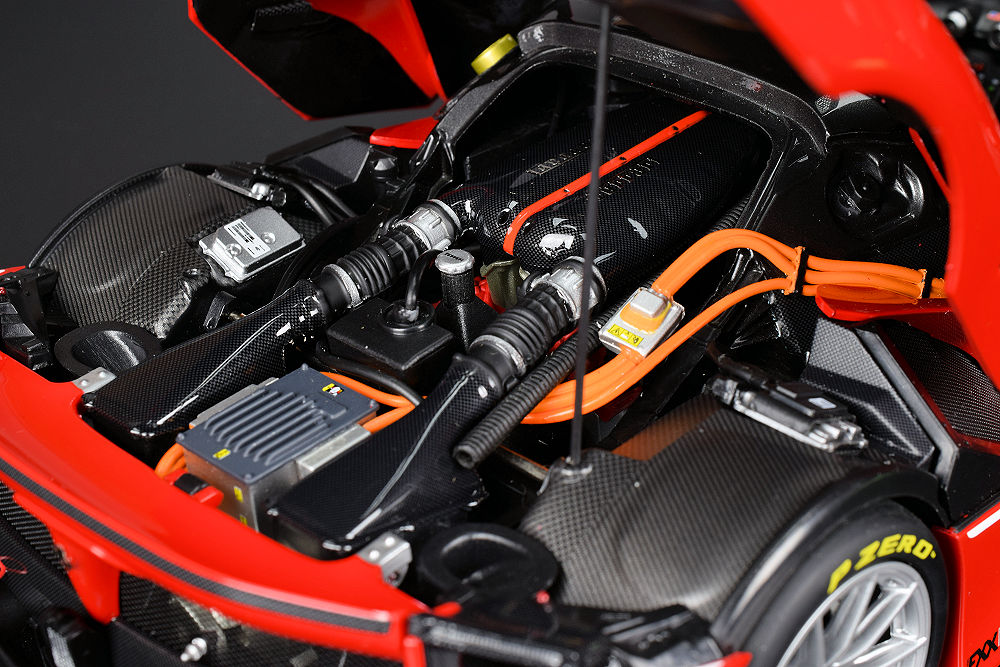

Bugatti Chiron



A Veyron után a Bugatti számára nem lehetett könnyű feladat méltó utódot készíteni. Azonban nem okoztak csalódást. A Chironba a gyár újragondolt 8 literes, négyturbós W16 motorját szerelték, 1500 lóerővel. A 0-100 így 2.5 másodperc alatt teljesíthető, a végsebesség pedig 420 km/h óra felett van. A karosszéria nagy része szénszálas anyagból készült, így az autó súlya is élhető maradt. A gyors váltásokért egy hétsebességes automata váltó felel.